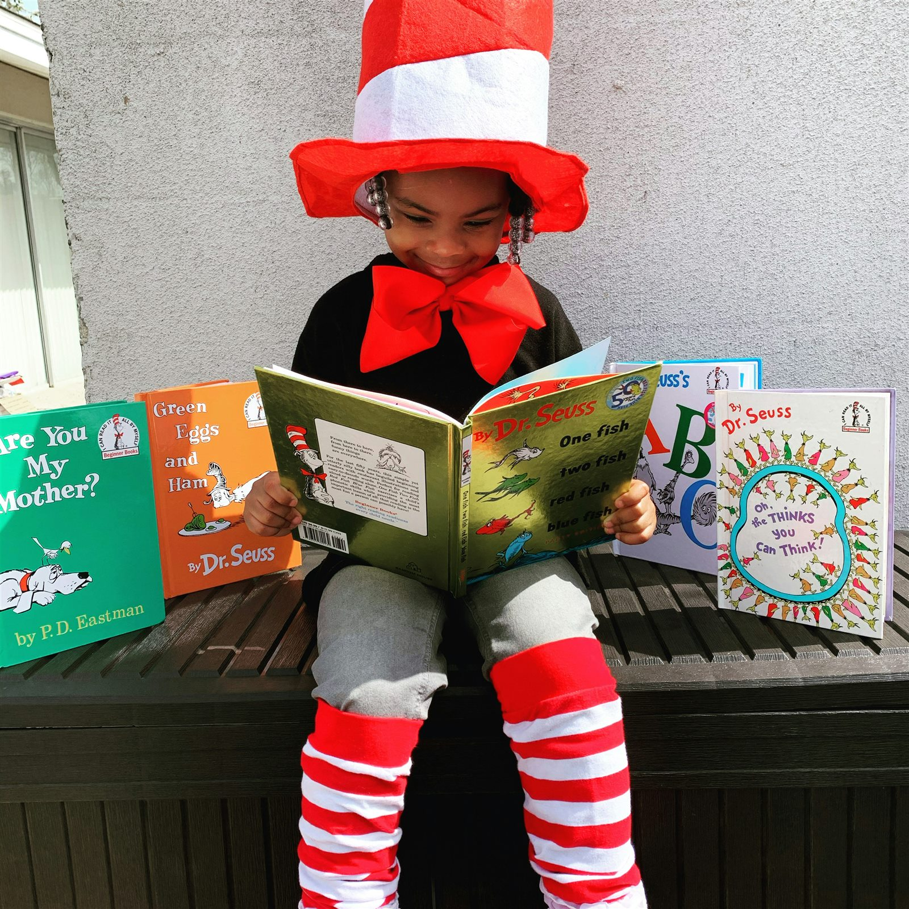
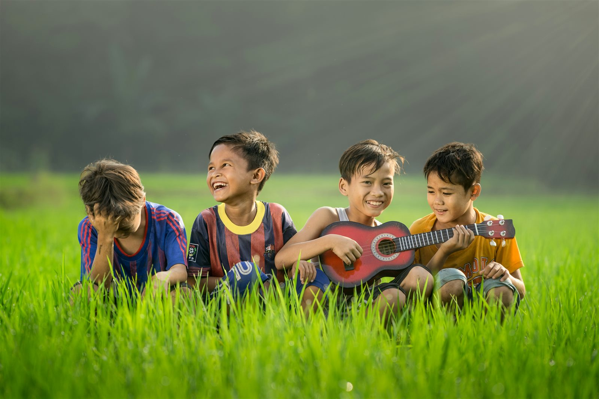
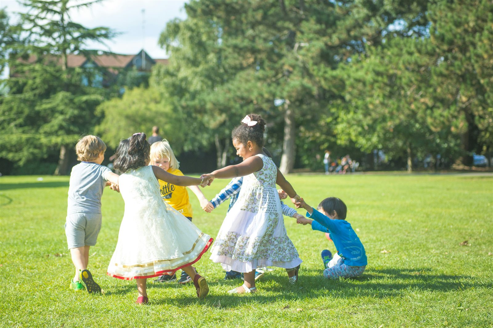
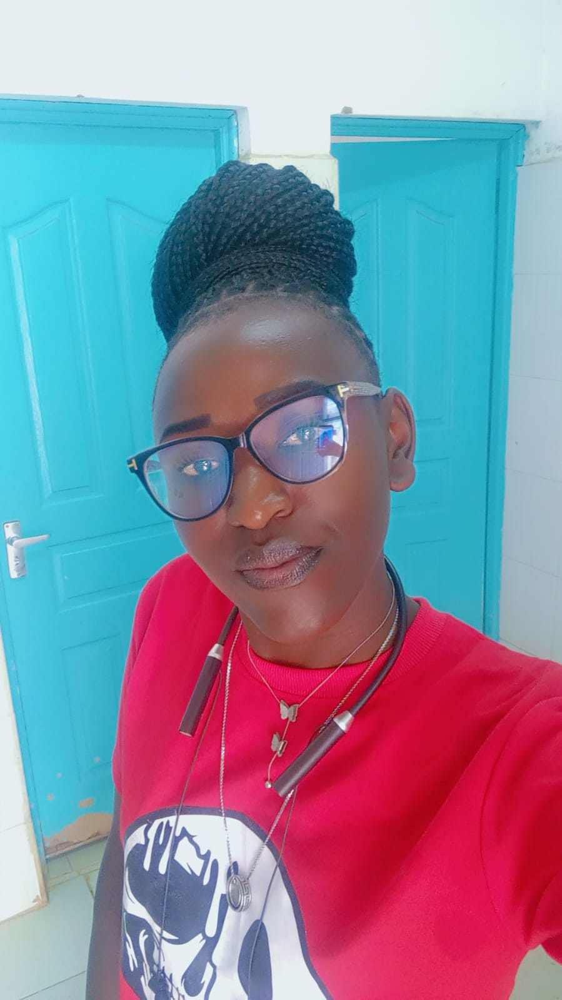
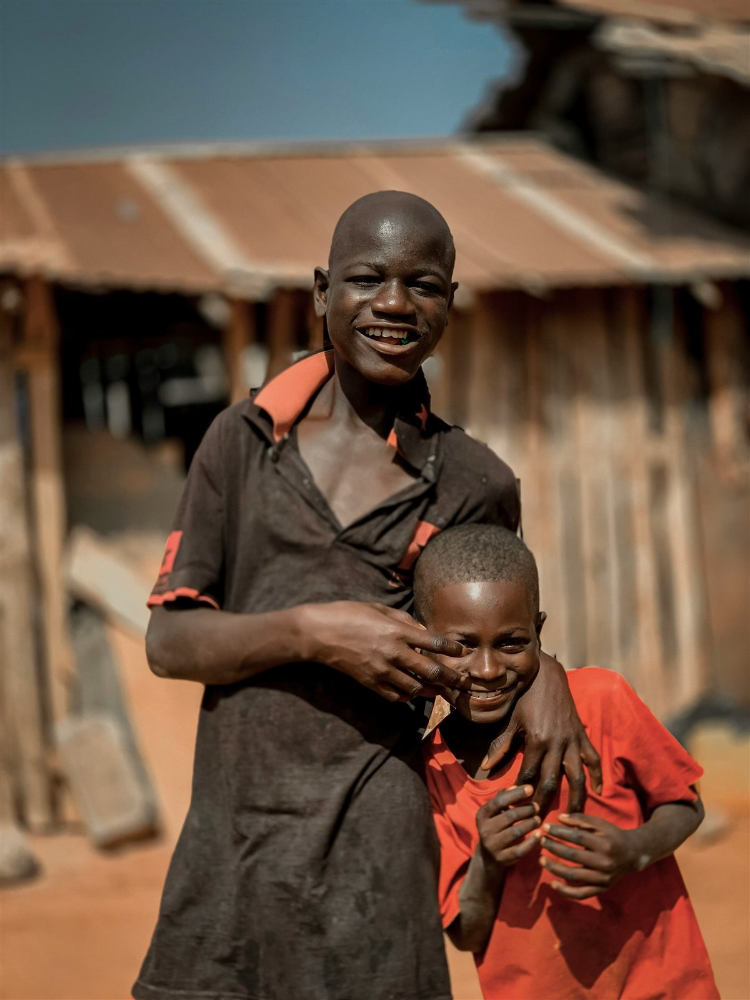

Date to be confirmed
Supporting children in education
Future updates about learning materials, academic encouragement, and education support will be shared here.
Read moreUpdates & impact
Verified updates, community moments, and stories that celebrate progress while respecting children's privacy.
Illustrative stock photography
News & updates
Stories below are topic previews, not reports of completed activities. Dated updates will be added when verified information is approved by the Center.

Date to be confirmed
Future updates about learning materials, academic encouragement, and education support will be shared here.
Read more
Date to be confirmed
Look here for approved news about play, recreation, teamwork, and opportunities to enjoy being active.
Read more
Date to be confirmed
Verified updates about community partnerships and practical support will be added after review.
Read moreNo dated activity updates or approved impact stories have been provided yet. We will publish them here once the details and permissions are confirmed.
Stories of impact
A verified, consented story about learning support will be shared here when approved by the Center.

Illustrative story previewThis space is reserved for a verified story shared with dignity and the appropriate informed consent.
When approved, a community story about recreation and connection can be shared here.

Illustrative story previewAny story shared here will be verified, anonymised where needed, and approved before publication.
These are illustrative stock photos, not Center participants. No real impact stories have been approved for publication yet.
Our Turning points and Triumphs
Our verified dates for milestones and achievements
In 2007, areal school-community progressive focus center-was successfully opened in Njiru to provide proper education and dignity to children who faced discrimination.
Partnering with KENWA in 2001, an establishment was made to support 76 parents infected or affected by HIV/AIDS ,successfully helping collapsed families find their footing and proper care.
Starting with just 13 children in 1998,the Center has grown over the years,to impact more than 3000 children,providing them with safety,food,education and mentorship
several children who passed through the center have successfully advanced to colleges and universities across Kenya,secured jobs ,and started their own families.
The organization successfully established income-generating projects,including farming vegetables and fruits,keeping poultry and goats,rearing rabbits,and practicing aquaponics to feed the children and keep operations running.
In 2024,through the generosity of partners and donors,a borehole was successfully drilled on the compound to provide clean water for the childre,gardens and the entire surrounding community.
Dr. sally Thuo achieved her Doctrate in Humanitarian work and successfully launched the Saljin Foundation.
In 2020, the organization successfully transitioned and relaunched as the saljin foundation,scaling its vision beyond a single center into a larger movement and voice .
in 2026,the MWAMKO initiative was launched to walk alongside teen and young mothers surviving sexual and gender-based violence,guiding them from deep pain to economic independence ,leadership,and trauma-informed support.
Moments of community
All six photos are illustrative stock images, not photographs of Center activities or participants.
Help create the next chapter